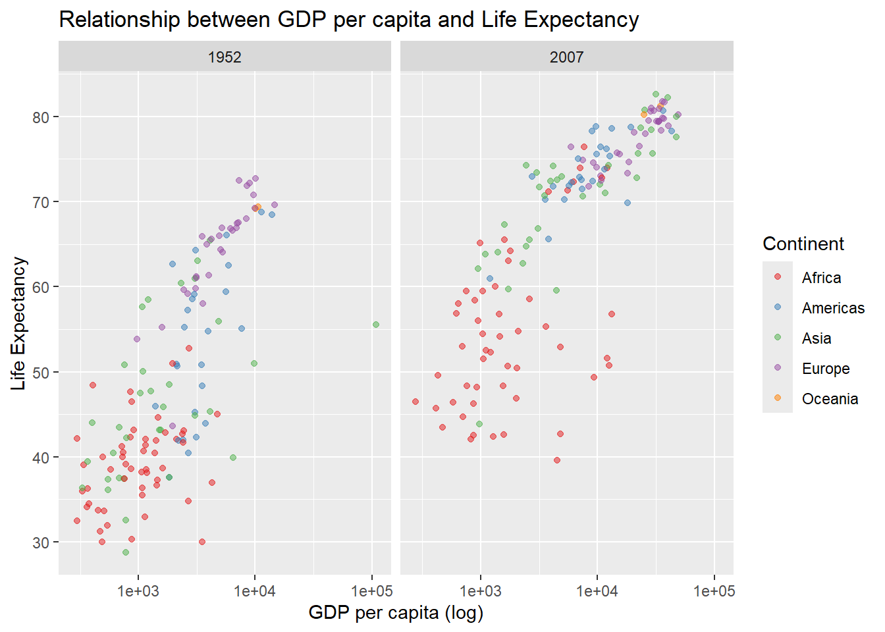

library(tidyverse)
library(gapminder)
gapminder_2007 <- gapminder %>%
filter(year == 2007)
ggplot(data = gapminder_2007)
Data visualization plays a fundamental role in understanding and communicating complex information. By transforming numbers and statistics into charts, tables, and other visual representations, we can identify patterns, trends, and insights that may not be immediately apparent in raw datasets. Additionally, data visualization facilitates the communication of results and findings to a broader audience, making complex information more accessible and understandable.
It is based on the grammar of graphics (grammar of graphics - GG), see Wilkinson (2012). The grammar of graphics is a set of principles and concepts that describe the structure and rules for creating charts consistently and effectively. GG is a framework for data visualization that breaks down each component of a chart into individual elements, creating distinct layers. Using the GG system, we can build charts step by step to achieve flexible and customizable results. Each aspect of the chart, such as points, lines, colors, and scales, is treated as a separate piece, allowing detailed control over the appearance and content of the final chart.

ggplot PackageThe most well-known data visualization package in R is ggplot2, which is based on the grammar of graphics. ggplot2 allows the creation of a wide variety of charts, including scatter plots, line plots, bar charts, histograms, and more, in a simple and flexible way. With ggplot2, you can customize basicaly all aspects of the chart, from the shape and color of the points to the axis scales and the background appearance.
To exemplify the use of ggplot, let’s consider the gapminder dataset, Rosling (2012).
The ggplot() function initializes a ggplot2 chart and defines the data to be used.
library(tidyverse)
library(gapminder)
gapminder_2007 <- gapminder %>%
filter(year == 2007)
ggplot(data = gapminder_2007)
This code creates a chart using the gapminder data for the year 2007 only. That’s all. There are no extra instructions about what to display on each axis (chart aesthetics).
The aesthetic mapping (aes) in ggplot2 is a function that allows linking variables from a dataset to the visual properties of a chart, such as color, shape, size, and position. Through aesthetic mapping, we can control how the data is visually represented in the chart.
For example, when creating a scatter plot, we can map the x (horizontal) variable and the y (vertical) variable from the dataset to the chart coordinates.
ggplot(data = gapminder_2007,
mapping = aes(x = gdpPercap, y = lifeExp))This code defines a scatter plot using the gapminder data for the year 2007 only. The x-axis represents GDP per capita (gdpPercap), and the y-axis represents life expectancy (lifeExp). That’s all. There are no extra instructions in the code snippet about the format (geometry) that should be used to display the data.
Geometry refers to the visual elements that make up a chart, such as points, lines, bars, and areas. Each chart type has its corresponding geometry, specified by the geom_* function followed by the desired geometry type.
For example, to create a scatter plot, we use the geom_point() geometry, while for creating a bar chart, we use the geom_bar() geometry.
ggplot(data = gapminder_2007,
mapping = aes(x = gdpPercap, y = lifeExp)) +
geom_point()
Each geometry has its specific parameters that can be adjusted to customize the appearance of the chart, such as color, size, fill, and transparency.
To color each point in the scatter plot according to the continent, just add color = continent to the aesthetic mapping.
ggplot(data = gapminder_2007,
mapping = aes(x = gdpPercap, y = lifeExp, color = continent)) +
geom_point()
Below are examples of other possible geometries. Some changes were made to how the ggplot functions are used. Purposefully, no descriptive text was added as these changes should be easy to interpret.
geom_line():
# Filter data for Brazil
dados_pais <- gapminder %>%
filter(country == "Brazil")
# Create line plot
ggplot(data = gapminder %>%
filter(country == "Brazil"),
aes(x = year, y = lifeExp)) +
geom_line()geom_bar():
# Create bar plot
ggplot(data = gapminder_2007, aes(x = continent, y = gdpPercap)) +
geom_bar(stat = "summary", fun = "mean")
geom_boxplot():
ggplot(data = gapminder_2007, aes(x = continent, y = lifeExp)) +
geom_boxplot()geom_text():
gapminder_2007 %>%
group_by(continent) %>%
summarise(mean_lifeExp = mean(lifeExp),
mean_gdpPercap = mean(gdpPercap)) %>%
ggplot(aes(x = mean_gdpPercap, y = mean_lifeExp, label = continent)) +
geom_point() +
geom_text(vjust = -0.5, hjust = 0.5)
Note that we are combining two geometries in a single plot (point and text). Text labels are added to points using the geom_text() geometry, with the parameters vjust and hjust defining the vertical and horizontal position of the text, respectively:
The vjust parameter adjusts the vertical alignment of the text relative to the point. A negative value (-0.5, for example) moves the text above the point, while a positive value moves it below the point.
The hjust parameter adjusts the horizontal alignment of the text relative to the point. A value of 0.5 centers the text horizontally relative to the point.
Facets refer to the ability to split a plot into multiple visualizations based on one or more categorical variables. This allows comparing relationships between variables in different data segments.
Facets are added using the facet_wrap() function to create a matrix of panels based on a categorical variable or facet_grid() to create a panel grid based on two categorical variables.
For example, we can use facets to create separate scatter plots for two distinct years, allowing comparisons of the relationships between GDP per capita and life expectancy in those two years.
gapminder_anos <- gapminder %>%
filter(year == 1952 | year == 2007)
ggplot(data = gapminder_anos,
mapping = aes(x = gdpPercap, y = lifeExp, color = continent)) +
geom_point() +
facet_wrap(~year)
Coordinates in ggplot2 determine how data is mapped in a graphic space. This includes the scales of the x and y axes, as well as any transformation or adjustment applied to the data. Coordinates affect the overall appearance of the chart, including its orientation, proportion, and scale.
To set limits on the x and y axes, we can use the coord_cartesian() function to control which value ranges are displayed on the chart. This is useful when we want to focus on a specific part of the data or prevent outliers from influencing the axis scales.
ggplot(data = gapminder_anos,
mapping = aes(x = gdpPercap, y = lifeExp, color = continent)) +
geom_point() +
facet_wrap(~year) +
coord_cartesian(ylim = c(40, 83))
It is possible to apply a logarithmic scale to the axes as well. This is useful when the data has a wide range of values and we are interested in highlighting differences across a broad range of values, such as in income or GDP data. To do this, simply use the scale_*_log10() function:
ggplot(data = gapminder_anos,
mapping = aes(x = gdpPercap, y = lifeExp, color = continent)) +
geom_point() +
facet_wrap(~year) +
scale_x_log10()
Themes control the visual aspects of charts, such as titles, legends, axes, and background colors. Predefined themes, such as theme_bw(), theme_minimal(), and theme_classic(), offer consistent visual styles that can be applied to charts for a specific appearance.
ggplot(data = gapminder_anos,
mapping = aes(x = gdpPercap, y = lifeExp, color = continent)) +
geom_point() +
facet_wrap(~year) +
scale_x_log10() +
theme_bw()Delete the last line from the example above, type theme_, press the tab key, and experiment with the different predefined themes in ggplot.
Additionally, we can define virtually all aspects of the chart. For example, to move the legend position to the bottom, we can use the function theme(legend.position = "bottom"). To change the font size, we can use the function theme(text = element_text(size = 12)). These settings can be combined in a single call to the theme() function, as shown below.
ggplot(data = gapminder_anos,
mapping = aes(x = gdpPercap, y = lifeExp, color = continent)) +
geom_point() +
facet_wrap(~year) +
scale_x_log10() +
theme_bw() +
theme(legend.position = "bottom",
text = element_text(size = 12))
The labs() function is responsible for customizing labels and titles in plots. In the example below, we rename the x and y axes and assign a more descriptive name to the color legend, which in this case represents the continent.
ggplot(data = gapminder_anos,
mapping = aes(x = gdpPercap, y = lifeExp, color = continent)) +
geom_point() +
facet_wrap(~year) +
scale_x_log10() +
labs(x = "GDP per capita (log)",
y = "Life Expectancy",
color = "Continent",
title = "Relationship between GDP per capita and Life Expectancy") +
theme_bw() +
theme(legend.position = "bottom")
The alpha parameter controls the opacity of geometric elements, ranging from 0 to 1. For example, geom_point(alpha = 0.5) makes the points semi-transparent, which can be useful for visualizing data overlaps in a scatter plot.
ggplot(data = gapminder_anos,
mapping = aes(x = gdpPercap, y = lifeExp, color = continent)) +
geom_point(alpha = 0.5) +
facet_wrap(~year) +
scale_x_log10() +
labs(x = "GDP per capita (log)",
y = "Life Expectancy",
color = "Continent",
title = "Relationship between GDP per capita and Life Expectancy")To choose specific colors for the levels of a categorical variable, we can use the scale_color_manual() function to manually assign colors to each level of the variable.
ggplot(data = gapminder_anos,
mapping = aes(x = gdpPercap, y = lifeExp, color = continent)) +
geom_point(alpha = 0.5) +
facet_wrap(~year) +
scale_x_log10() +
scale_color_manual(values = c("blue", "green", "orange", "purple", "red"))+
labs(x = "GDP per capita (log)",
y = "Life Expectancy",
color = "Continent",
title = "Relationship between GDP per capita and Life Expectancy")You can use color palettes from the RColorBrewer package using the scale_color_brewer() function.
ggplot(data = gapminder_anos,
mapping = aes(x = gdpPercap, y = lifeExp, color = continent)) +
geom_point(alpha = 0.5) +
facet_wrap(~year) +
scale_x_log10() +
scale_color_brewer(palette = "Set1")+
labs(x = "GDP per capita (log)",
y = "Life Expectancy",
color = "Continent",
title = "Relationship between GDP per capita and Life Expectancy")
The advantage of using RColorBrewer color palettes is that they are carefully designed to be perceptually distinct and suitable for representing different groups or categories in plots. This means that the colors in a palette are more easily distinguishable from each other, even when printed in black and white or viewed by people with visual impairments. See all available palettes here.
There are some extra packages that work as extensions of ggplot2. We present some in this section.
patchwork PackageThe patchwork package is used to combine multiple ggplot2 plots into a single visualization. It allows you to create flexible and complex layouts, adding, organizing, and adjusting individual plots.
# Install the patchwork package (only if not already installed)
install.packages("patchwork")After loading the package, you can use the + operator to combine ggplot2 plots into a single visualization.
Here is a simple example creating two separate plots and then combining them using patchwork:
library(patchwork)Warning: package 'patchwork' was built under R version 4.2.3plot1 <- ggplot(data = gapminder_2007,
mapping = aes(x = gdpPercap, y = lifeExp)) +
geom_point(alpha = 0.5) +
labs(x = "GDP per capita (log)",
y = "Life Expectancy in 2007",
title = "Relationship between GDP per capita and Life Expectancy") +
theme_classic()
plot2 <- ggplot(data = gapminder_2007,
mapping = aes(lifeExp)) +
geom_histogram() +
labs(title = "Histogram of Life Expectancy",
x = "Life Expectancy in 2007",
y = "Frequency") +
theme_classic()
plot1 + plot2ggthemes PackageThe ggthemes package is an extension of ggplot2 that provides a variety of pre-defined themes to customize the appearance of plots. See the documentation here.
# Install the ggthemes package (only if not already installed)
install.packages("ggthemes")After loading the package, you can apply any of the available themes to your ggplot2 plots using the theme_*() function. In the example below, three versions of the same plot are created with different themes. The + and / operators are used to define how the plots will be displayed.
# Load the ggthemes package
library(ggthemes)Warning: package 'ggthemes' was built under R version 4.2.3plot0 <- ggplot(data = gapminder_2007,
mapping = aes(x = gdpPercap, y = lifeExp)) +
geom_point(alpha = 0.5) +
labs(x = "GDP per capita (log)",
y = "Life Expectancy in 2007")
plot1 <- plot0 + theme_economist()
plot2 <- plot0 + theme_excel()
plot3 <- plot0 + theme_stata()
plot1 + (plot2 / plot3)plotly PackageThe plotly package offers features to create interactive plots. To add interactivity to the provided plot, we can use the ggplotly() function to convert a plot created with ggplot2 into an interactive plot. Use the command install.packages("plotly") if you don’t have the package installed.
library(plotly)Warning: package 'plotly' was built under R version 4.2.3grafico <- ggplot(data = gapminder_anos,
mapping = aes(x = gdpPercap, y = lifeExp,
color = continent, text = country)) +
geom_point(alpha = 0.5) +
facet_wrap(~year) +
scale_x_log10() +
labs(x = "GDP per capita (log)",
y = "Life Expectancy",
color = "Continent",
title = "Relationship between GDP per capita and Life Expectancy")ggplotly(grafico) When exploring different types of plots to visualize your data, the website Data to Viz can be a valuable tool. It provides a complete gallery of plot types and offers guidance on when and how to use each one. Additionally, the website provides specific examples of how to create these plots using different libraries, such as ggplot2 in R and matplotlib in Python.
1. Let’s use the Billboard data presented in Section 3.7. Your task is to reproduce the plots below using data processing techniques with dplyr and data visualization with ggplot.
a) The plot below shows the history of each song in the ranking over the weeks.
b) The plot below is a small modification of the one presented in item a); the x-axis shows the date the song entered the ranking.
c) The plot below shows the ranking history of two songs: “Higher” and “With Arms Wide Open.”

2. Use the data generated in Section 2.2.1 representing the closing price of a stock and reproduce the plot below, showing the evolution of the moving average over time.

3. (Challenge) Reproduce the scatter plot presented in Section 2.3.
4. Reproduce the figure presented in Section 3.5.6.